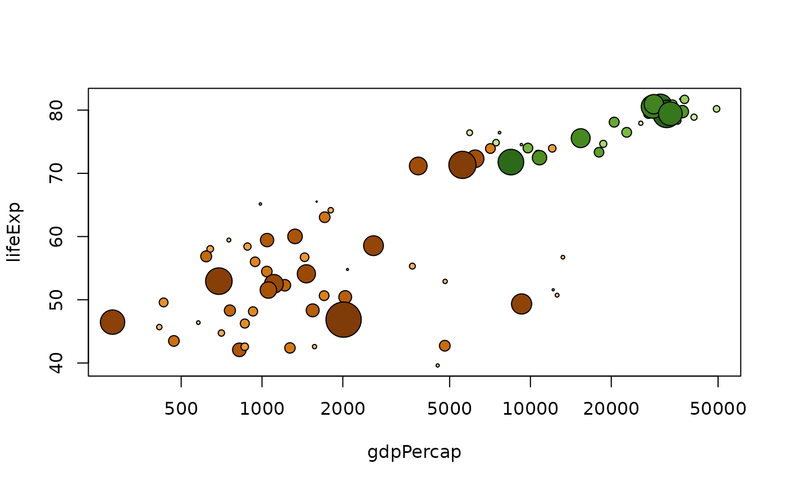
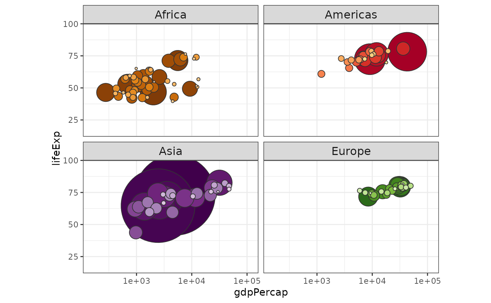

Color schemes for the countries and continents in the Gapminder data.
Format
Named character vectors giving country and continent colors:
- country_colors
colors for the 142 countries
- continent_colors
colors for the 5 continents
See also
gapminder for a description of the dataset
Examples
# ggplot2 examples are below these base graphics examples!
# using country_colors with base graphics
# for convenience, integrate the country colors into the data.frame
gap_with_colors <-
data.frame(gapminder,
cc = I(country_colors[match(
gapminder$country,
names(country_colors)
)])
)
# bubble plot, focus just on Africa and Europe in 2007
keepers <- with(
gap_with_colors,
continent %in% c("Africa", "Europe") & year == 2007
)
plot(lifeExp ~ gdpPercap, gap_with_colors,
subset = keepers, log = "x", pch = 21,
cex = sqrt(gap_with_colors$pop[keepers] / pi) / 1500,
bg = gap_with_colors$cc[keepers]
)

if (require(ggplot2)) {
# with ggplot2, just provide country_colors to scale_color_manual():
# ... + scale_color_manual(values = country_colors) + ...
# simple line plot for 5 countries
h_countries <- c("Egypt", "Haiti", "Romania", "Thailand", "Venezuela")
h_dat <- droplevels(subset(gapminder, country %in% h_countries))
h_dat$country <- with(h_dat, reorder(country, lifeExp, max))
ggplot(h_dat, aes(x = year, y = lifeExp)) +
geom_line(aes(color = country)) +
scale_colour_manual(values = country_colors) +
guides(color = guide_legend(reverse = TRUE))
# spaghetti plot for lots of countries
ggplot(
subset(gapminder, continent != "Oceania"),
aes(x = year, y = lifeExp, group = country, color = country)
) +
geom_line(lwd = 1, show_guide = FALSE) +
facet_wrap(~continent) +
scale_color_manual(values = country_colors) +
theme_bw() +
theme(strip.text = element_text(size = rel(1.1)))
# bubble plot for lots of countries
gap_bit <- subset(gapminder, year == 2007 & continent != "Oceania")
gap_bit <- gap_bit[with(gap_bit, order(continent, -1 * pop)), ]
ggplot(gap_bit, aes(x = gdpPercap, y = lifeExp, size = pop)) +
scale_x_log10(limits = c(150, 115000)) +
ylim(c(16, 96)) +
geom_point(pch = 21, color = "grey20", show_guide = FALSE) +
scale_size_area(max_size = 40) +
facet_wrap(~continent) +
coord_fixed(ratio = 1 / 43) +
aes(fill = country) +
scale_fill_manual(values = country_colors) +
theme_bw() +
theme(strip.text = element_text(size = rel(1.1)))
}
#> Loading required package: ggplot2
#> Warning: The `show_guide` argument of `layer()` is deprecated as of ggplot2 2.0.0.
#> ℹ Please use the `show.legend` argument instead.
